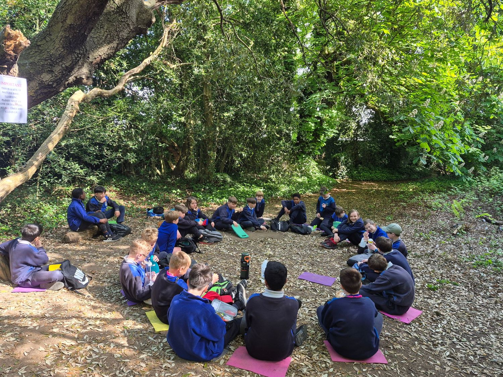
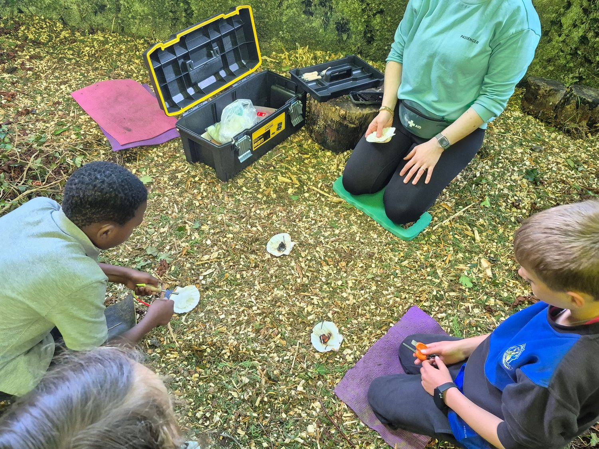
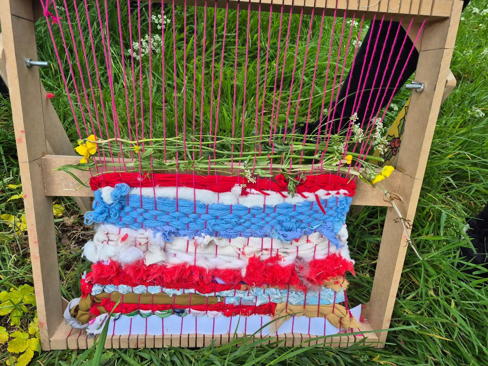
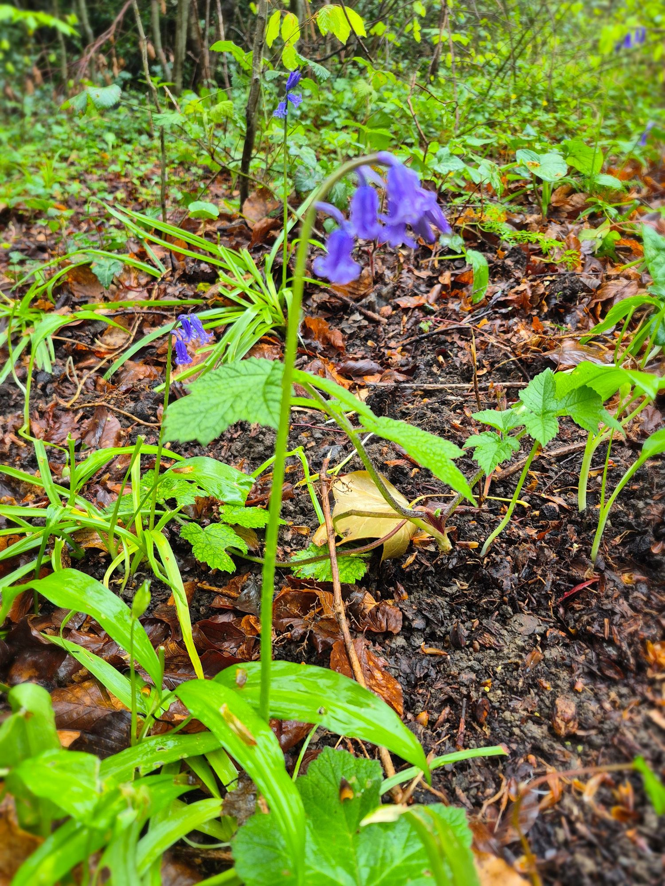
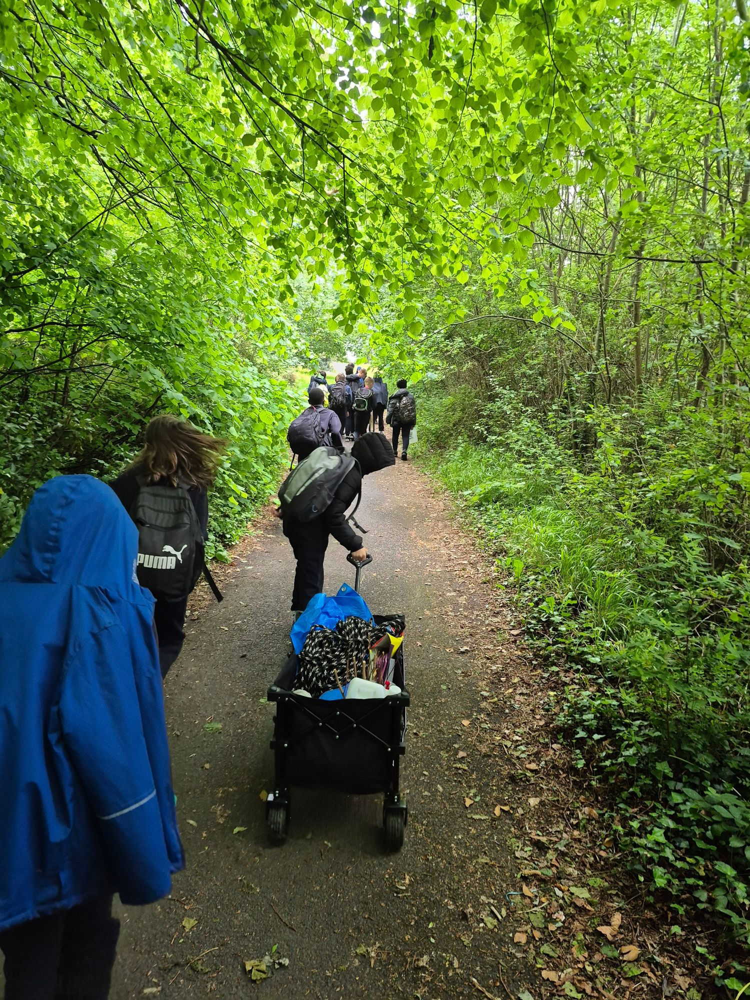
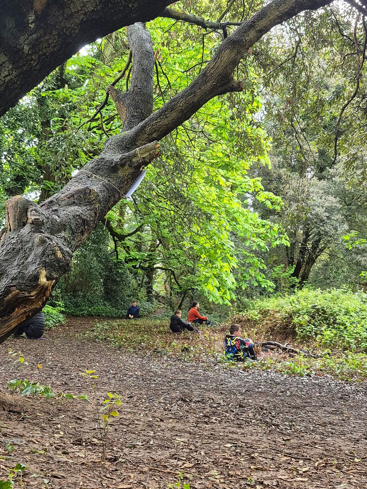

Outdoor learning
What is Forest School?
Forest School is a child-centred approach to learning in nature, built around regular outdoor experiences, exploration, creativity, confidence and connection with the natural world.
About our Forest SchoolParent review 2026
“... x can be nervous around new activities that are outside the norm and Forest School has pushed him in a really positive way. He ended up looking forward to it so much each week and the only negative I could say is he would've liked more! An excellent addition to the curriculum”





